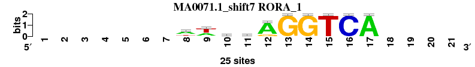
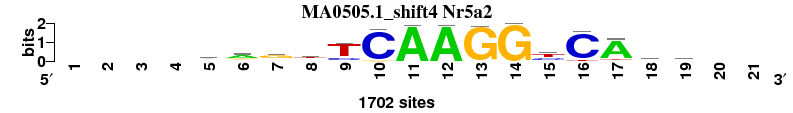
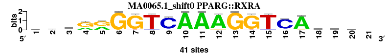
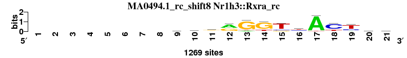
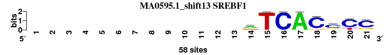
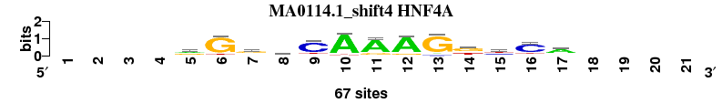

| Matrix name | Aligned logos | cor |
Ncor |
logoDP |
NIcor |
NsEucl |
SSD |
NSW |
rcor |
rNcor |
rlogoDP |
rNIcor |
rNsEucl |
rSSD |
rNSW |
rank_mean |
match_rank |
Aligned matrices |
|---|
| dyads_m4_shift8 (dyads_m4) |
 |
|
|
|
|
|
|
|
|
|
|
|
|
|
|
|
|
; dyads_m4; m=0 (reference); ncol1=13; shift=8; ncol=21; --------cyAAGGTCACCst
; Alignment reference
a 0 0 0 0 0 0 0 0 16 15 64 78 0 0 0 0 76 0 1 19 16
c 0 0 0 0 0 0 0 0 26 32 4 0 1 0 0 78 0 77 75 25 16
g 0 0 0 0 0 0 0 0 19 11 9 0 77 78 0 0 2 1 2 20 19
t 0 0 0 0 0 0 0 0 17 20 1 0 0 0 78 0 0 0 0 14 27
|
| MA0071.1_shift7 (RORA_1) |
 |
0.936 |
0.601 |
10.432 |
0.608 |
0.938 |
0.618 |
0.966 |
4 |
2 |
2 |
2 |
3 |
4 |
4 |
3.000 |
1 |
; dyads_m4 versus MA0071.1 (RORA_1); m=1/16; ncol2=10; w=9; offset=-1; strand=D; shift=7; score= 3; -------wwcwAGGTCA----
; cor=0.936; Ncor=0.601; logoDP=10.432; NIcor=0.608; NsEucl=0.938; SSD=0.618; NSW=0.966; rcor=4; rNcor=2; rlogoDP=2; rNIcor=2; rNsEucl=3; rSSD=4; rNSW=4; rank_mean=3.000; match_rank=1
a 0 0 0 0 0 0 0 15 9 6 11 21 0 0 0 0 25 0 0 0 0
c 0 0 0 0 0 0 0 1 1 12 2 0 0 0 0 25 0 0 0 0 0
g 0 0 0 0 0 0 0 2 0 4 5 4 25 25 0 0 0 0 0 0 0
t 0 0 0 0 0 0 0 7 15 3 7 0 0 0 25 0 0 0 0 0 0
|
| MA0141.2_shift5 (Esrrb) |
 |
0.968 |
0.545 |
9.638 |
0.544 |
0.956 |
0.312 |
0.983 |
1 |
5 |
5 |
4 |
2 |
2 |
2 |
3.000 |
2 |
; dyads_m4 versus MA0141.2 (Esrrb); m=2/16; ncol2=12; w=9; offset=-3; strand=D; shift=5; score= 3; -----rgsyCAAGGTCA----
; cor=0.968; Ncor=0.545; logoDP=9.638; NIcor=0.544; NsEucl=0.956; SSD=0.312; NSW=0.983; rcor=1; rNcor=5; rlogoDP=5; rNIcor=4; rNsEucl=2; rSSD=2; rNSW=2; rank_mean=3.000; match_rank=2
a 0 0 0 0 0 1055 673 403 260 312 3347 3590 33 12 180 9 3478 0 0 0 0
c 0 0 0 0 0 801 832 1212 1230 2653 32 2 2 11 43 3394 21 0 0 0 0
g 0 0 0 0 0 984 1352 1212 449 630 248 60 3597 3622 243 167 128 0 0 0 0
t 0 0 0 0 0 773 767 807 1702 51 27 6 29 16 3192 85 26 0 0 0 0
|
| MA0141.1_shift5 (Esrrb) |
 |
0.968 |
0.545 |
9.506 |
0.544 |
0.956 |
0.312 |
0.983 |
2 |
6 |
6 |
5 |
1 |
1 |
1 |
3.143 |
3 |
; dyads_m4 versus MA0141.1 (Esrrb); m=3/16; ncol2=12; w=9; offset=-3; strand=D; shift=5; score= 3.1429; -----rgsyCAAGGTCA----
; cor=0.968; Ncor=0.545; logoDP=9.506; NIcor=0.544; NsEucl=0.956; SSD=0.312; NSW=0.983; rcor=2; rNcor=6; rlogoDP=6; rNIcor=5; rNsEucl=1; rSSD=1; rNSW=1; rank_mean=3.143; match_rank=3
a 0 0 0 0 0 1054 673 420 259 310 3326 3567 32 21 182 9 3458 0 0 0 0
c 0 0 0 0 0 800 829 1211 1250 2664 32 2 5 12 46 3376 20 0 0 0 0
g 0 0 0 0 0 985 1370 1209 448 627 248 60 3586 3602 244 170 129 0 0 0 0
t 0 0 0 0 0 793 767 805 1693 52 50 27 31 17 3175 85 27 0 0 0 0
|
| MA0160.1_shift10 (NR4A2) |
 |
0.964 |
0.593 |
8.026 |
0.586 |
0.936 |
0.516 |
0.968 |
3 |
3 |
8 |
3 |
4 |
3 |
3 |
3.857 |
4 |
; dyads_m4 versus MA0160.1 (NR4A2); m=4/16; ncol2=8; w=8; offset=2; strand=D; shift=10; score= 3.8571; ----------aAGGTCAc---
; cor=0.964; Ncor=0.593; logoDP=8.026; NIcor=0.586; NsEucl=0.936; SSD=0.516; NSW=0.968; rcor=3; rNcor=3; rlogoDP=8; rNIcor=3; rNsEucl=4; rSSD=3; rNSW=3; rank_mean=3.857; match_rank=4
a 0 0 0 0 0 0 0 0 0 0 8 13 0 3 2 0 14 3 0 0 0
c 0 0 0 0 0 0 0 0 0 0 1 0 0 0 2 13 0 8 0 0 0
g 0 0 0 0 0 0 0 0 0 0 3 1 13 11 0 0 0 2 0 0 0
t 0 0 0 0 0 0 0 0 0 0 1 0 1 0 10 1 0 0 0 0 0
|
| MA0592.1_shift8 (ESRRA) |
 |
0.883 |
0.747 |
10.206 |
0.719 |
0.924 |
1.406 |
0.936 |
6 |
1 |
3 |
1 |
6 |
6 |
6 |
4.143 |
5 |
; dyads_m4 versus MA0592.1 (ESRRA); m=5/16; ncol2=11; w=11; offset=0; strand=D; shift=8; score= 4.1429; --------yCAAGGTCAcm--
; cor=0.883; Ncor=0.747; logoDP=10.206; NIcor=0.719; NsEucl=0.924; SSD=1.406; NSW=0.936; rcor=6; rNcor=1; rlogoDP=3; rNIcor=1; rNsEucl=6; rSSD=6; rNSW=6; rank_mean=4.143; match_rank=5
a 0 0 0 0 0 0 0 0 17 18 200 198 0 0 6 0 197 23 70 0 0
c 0 0 0 0 0 0 0 0 118 174 2 0 0 0 0 205 1 108 54 0 0
g 0 0 0 0 0 0 0 0 11 15 6 10 203 207 22 3 10 44 40 0 0
t 0 0 0 0 0 0 0 0 62 1 0 0 5 1 180 0 0 33 44 0 0
|
| MA0258.2_shift11 (ESR2) |
 |
0.899 |
0.500 |
7.603 |
0.485 |
0.923 |
1.183 |
0.941 |
5 |
10 |
10 |
8 |
7 |
5 |
5 |
7.143 |
6 |
; dyads_m4 versus MA0258.2 (ESR2); m=6/16; ncol2=15; w=10; offset=3; strand=D; shift=11; score= 7.1429; -----------rGGTCAsmst
; cor=0.899; Ncor=0.500; logoDP=7.603; NIcor=0.485; NsEucl=0.923; SSD=1.183; NSW=0.941; rcor=5; rNcor=10; rlogoDP=10; rNIcor=8; rNsEucl=7; rSSD=5; rNSW=5; rank_mean=7.143; match_rank=6
a 0 0 0 0 0 0 0 0 0 0 0 5410 429 59 74 0 8098 502 2092 1808 1602
c 0 0 0 0 0 0 0 0 0 0 0 96 0 0 147 7621 1 4202 3235 2510 975
g 0 0 0 0 0 0 0 0 0 0 0 2563 7170 8143 989 533 57 2738 1688 2173 533
t 0 0 0 0 0 0 0 0 0 0 0 174 644 41 7033 89 87 801 1228 1752 5133
|
| MA0112.1_shift9 (ESR1) |
 |
0.851 |
0.538 |
7.739 |
0.537 |
0.922 |
1.761 |
0.927 |
7 |
7 |
9 |
6 |
8 |
8 |
7 |
7.429 |
7 |
; dyads_m4 versus MA0112.1 (ESR1); m=7/16; ncol2=18; w=12; offset=1; strand=D; shift=9; score= 7.4286; ---------ccAGGTCaCcrt
; cor=0.851; Ncor=0.538; logoDP=7.739; NIcor=0.537; NsEucl=0.922; SSD=1.761; NSW=0.927; rcor=7; rNcor=7; rlogoDP=9; rNIcor=6; rNsEucl=8; rSSD=8; rNSW=7; rank_mean=7.429; match_rank=7
a 0 0 0 0 0 0 0 0 0 1 1 7 2 0 0 0 6 1 2 3 1
c 0 0 0 0 0 0 0 0 0 5 5 1 0 0 0 7 0 7 5 2 1
g 0 0 0 0 0 0 0 0 0 1 1 1 7 9 0 2 2 1 1 4 1
t 0 0 0 0 0 0 0 0 0 2 2 0 0 0 9 0 1 0 1 0 6
|
| MA0112.2_shift6 (ESR1) |
 |
0.841 |
0.547 |
4.679 |
0.520 |
0.925 |
1.921 |
0.926 |
8 |
4 |
13 |
7 |
5 |
10 |
8 |
7.857 |
8 |
; dyads_m4 versus MA0112.2 (ESR1); m=8/16; ncol2=20; w=13; offset=-2; strand=D; shift=6; score= 7.8571; ------vkscmaGGtCAcccT
; cor=0.841; Ncor=0.547; logoDP=4.679; NIcor=0.520; NsEucl=0.925; SSD=1.921; NSW=0.926; rcor=8; rNcor=4; rlogoDP=13; rNIcor=7; rNsEucl=5; rSSD=10; rNSW=8; rank_mean=7.857; match_rank=8
a 0 0 0 0 0 0 122 107 64 83 134 308 36 19 33 4 398 58 63 64 32
c 0 0 0 0 0 0 120 80 173 229 232 28 8 18 41 394 13 250 276 258 19
g 0 0 0 0 0 0 154 164 149 65 47 89 387 420 91 53 27 107 53 97 8
t 0 0 0 0 0 0 71 117 82 93 57 48 43 18 310 24 37 60 83 56 416
|
| MA0505.1_shift4 (Nr5a2) |
 |
0.788 |
0.510 |
8.750 |
0.473 |
0.899 |
2.483 |
0.887 |
10 |
9 |
7 |
9 |
12 |
12 |
14 |
10.429 |
9 |
; dyads_m4 versus MA0505.1 (Nr5a2); m=9/16; ncol2=15; w=11; offset=-4; strand=D; shift=4; score=10.4286; ----ragtTCAAGGyCAgs--
; cor=0.788; Ncor=0.510; logoDP=8.750; NIcor=0.473; NsEucl=0.899; SSD=2.483; NSW=0.887; rcor=10; rNcor=9; rlogoDP=7; rNIcor=9; rNsEucl=12; rSSD=12; rNSW=14; rank_mean=10.429; match_rank=9
a 0 0 0 0 645 985 276 122 71 8 1685 1679 39 0 169 0 1437 271 249 0 0
c 0 0 0 0 224 170 198 378 351 1616 14 0 0 0 584 1568 20 345 693 0 0
g 0 0 0 0 634 336 990 366 23 74 0 23 1663 1702 61 12 90 740 454 0 0
t 0 0 0 0 199 211 238 836 1257 4 3 0 0 0 888 122 155 346 306 0 0
|
| MA0065.1_shift0 (PPARG::RXRA) |
 |
0.787 |
0.450 |
9.805 |
0.420 |
0.904 |
2.629 |
0.890 |
11 |
12 |
4 |
12 |
11 |
14 |
12 |
10.857 |
10 |
; dyads_m4 versus MA0065.1 (PPARG::RXRA); m=10/16; ncol2=20; w=12; offset=-8; strand=D; shift=0; score=10.8571; yywrrGGTCAAAGGTCAymk-
; cor=0.787; Ncor=0.450; logoDP=9.805; NIcor=0.420; NsEucl=0.904; SSD=2.629; NSW=0.890; rcor=11; rNcor=12; rlogoDP=4; rNIcor=12; rNsEucl=11; rSSD=14; rNSW=12; rank_mean=10.857; match_rank=10
a 10 7 19 13 17 0 0 0 2 41 41 39 0 0 0 2 38 10 13 7 0
c 12 13 4 1 0 0 0 2 37 0 0 0 0 0 2 36 1 12 15 10 0
g 7 8 6 27 24 41 39 0 2 0 0 2 41 39 0 1 2 4 9 12 0
t 12 13 12 0 0 0 2 39 0 0 0 0 0 2 39 2 0 15 4 12 0
|
| MA0258.1_shift9 (ESR2) |
 |
0.774 |
0.489 |
6.472 |
0.471 |
0.906 |
2.542 |
0.894 |
13 |
11 |
12 |
10 |
10 |
13 |
11 |
11.429 |
11 |
; dyads_m4 versus MA0258.1 (ESR2); m=11/16; ncol2=18; w=12; offset=1; strand=D; shift=9; score=11.4286; ---------cwrGGTCAsgkT
; cor=0.774; Ncor=0.489; logoDP=6.472; NIcor=0.471; NsEucl=0.906; SSD=2.542; NSW=0.894; rcor=13; rNcor=11; rlogoDP=12; rNIcor=10; rNsEucl=10; rSSD=13; rNSW=11; rank_mean=11.429; match_rank=11
a 0 0 0 0 0 0 0 0 0 78 158 186 27 18 13 0 337 49 64 52 21
c 0 0 0 0 0 0 0 0 0 161 51 15 0 20 19 357 1 123 63 61 33
g 0 0 0 0 0 0 0 0 0 63 41 154 275 319 33 0 0 113 149 147 24
t 0 0 0 0 0 0 0 0 0 55 107 2 55 0 292 0 19 72 81 97 279
|
| MA0017.1_rc_shift3 (NR2F1_rc) |
 |
0.821 |
0.410 |
0.698 |
-0.117 |
0.897 |
1.725 |
0.904 |
9 |
15 |
16 |
16 |
13 |
7 |
9 |
12.143 |
12 |
; dyads_m4 versus MA0017.1_rc (NR2F1_rc); m=12/16; ncol2=14; w=9; offset=-5; strand=R; shift=3; score=12.1429; ---arGkkCAAAGkTCA----
; cor=0.821; Ncor=0.410; logoDP=0.698; NIcor=-0.117; NsEucl=0.897; SSD=1.725; NSW=0.904; rcor=9; rNcor=15; rlogoDP=16; rNIcor=16; rNsEucl=13; rSSD=7; rNSW=9; rank_mean=12.143; match_rank=12
a 0 0 0 7 4 1 1 0 0 12 11 10 0 0 0 0 11 0 0 0 0
c 0 0 0 3 0 1 1 3 11 0 0 0 0 0 1 12 2 0 0 0 0
g 0 0 0 3 6 10 5 4 0 0 2 3 13 7 0 0 0 0 0 0 0
t 0 0 0 0 3 1 6 6 2 1 0 0 0 6 12 1 0 0 0 0 0
|
| MA0494.1_rc_shift8 (Nr1h3::Rxra_rc) |
 |
0.764 |
0.523 |
0.784 |
-0.068 |
0.910 |
2.721 |
0.895 |
14 |
8 |
15 |
15 |
9 |
15 |
10 |
12.286 |
13 |
; dyads_m4 versus MA0494.1_rc (Nr1h3::Rxra_rc); m=13/16; ncol2=19; w=13; offset=0; strand=R; shift=8; score=12.2857; --------cmrrGGTyACyyb
; cor=0.764; Ncor=0.523; logoDP=0.784; NIcor=-0.068; NsEucl=0.910; SSD=2.721; NSW=0.895; rcor=14; rNcor=8; rlogoDP=15; rNIcor=15; rNsEucl=9; rSSD=15; rNSW=10; rank_mean=12.286; match_rank=13
a 0 0 0 0 0 0 0 0 303 459 430 714 112 32 0 193 1188 69 154 302 250
c 0 0 0 0 0 0 0 0 439 333 196 42 0 20 192 440 4 903 321 336 343
g 0 0 0 0 0 0 0 0 290 196 508 502 1040 962 177 77 0 19 0 257 318
t 0 0 0 0 0 0 0 0 237 281 135 11 117 255 900 559 77 278 794 374 358
|
| MA0115.1_shift2 (NR1H2::RXRA) |
 |
0.760 |
0.440 |
12.314 |
0.422 |
0.883 |
3.288 |
0.851 |
15 |
13 |
1 |
11 |
15 |
16 |
16 |
12.429 |
14 |
; dyads_m4 versus MA0115.1 (NR1H2::RXRA); m=14/16; ncol2=17; w=11; offset=-6; strand=D; shift=2; score=12.4286; --AAAGGTCAAAGGTCAAc--
; cor=0.760; Ncor=0.440; logoDP=12.314; NIcor=0.422; NsEucl=0.883; SSD=3.288; NSW=0.851; rcor=15; rNcor=13; rlogoDP=1; rNIcor=11; rNsEucl=15; rSSD=16; rNSW=16; rank_mean=12.429; match_rank=14
a 0 0 17 17 20 0 0 0 0 25 24 25 0 0 0 0 25 20 0 0 0
c 0 0 5 1 0 0 0 0 25 0 0 0 0 0 0 25 0 1 15 0 0
g 0 0 0 5 5 25 24 0 0 0 0 0 25 25 0 0 0 2 6 0 0
t 0 0 3 2 0 0 1 25 0 0 1 0 0 0 25 0 0 2 4 0 0
|
| MA0595.1_shift13 (SREBF1) |
 |
0.786 |
0.419 |
7.218 |
0.408 |
0.882 |
1.780 |
0.889 |
12 |
14 |
11 |
13 |
16 |
9 |
13 |
12.571 |
15 |
; dyads_m4 versus MA0595.1 (SREBF1); m=15/16; ncol2=10; w=8; offset=5; strand=D; shift=13; score=12.5714; -------------rTCACcCC
; cor=0.786; Ncor=0.419; logoDP=7.218; NIcor=0.408; NsEucl=0.882; SSD=1.780; NSW=0.889; rcor=12; rNcor=14; rlogoDP=11; rNIcor=13; rNsEucl=16; rSSD=9; rNSW=13; rank_mean=12.571; match_rank=15
a 0 0 0 0 0 0 0 0 0 0 0 0 0 28 0 0 58 0 6 0 2
c 0 0 0 0 0 0 0 0 0 0 0 0 0 14 0 58 0 51 38 44 45
g 0 0 0 0 0 0 0 0 0 0 0 0 0 16 0 0 0 7 13 0 11
t 0 0 0 0 0 0 0 0 0 0 0 0 0 0 58 0 0 0 1 14 0
|
| MA0114.1_shift4 (HNF4A) |
 |
0.758 |
0.401 |
3.463 |
0.369 |
0.886 |
2.096 |
0.884 |
16 |
16 |
14 |
14 |
14 |
11 |
15 |
14.286 |
16 |
; dyads_m4 versus MA0114.1 (HNF4A); m=16/16; ncol2=13; w=9; offset=-4; strand=D; shift=4; score=14.2857; ----rGgbCAAAGkyCa----
; cor=0.758; Ncor=0.401; logoDP=3.463; NIcor=0.369; NsEucl=0.886; SSD=2.096; NSW=0.884; rcor=16; rNcor=16; rlogoDP=14; rNIcor=14; rNsEucl=14; rSSD=11; rNSW=15; rank_mean=14.286; match_rank=16
a 0 0 0 0 28 2 12 5 3 59 53 56 4 6 3 4 42 0 0 0 0
c 0 0 0 0 7 2 4 23 51 1 2 1 4 2 22 49 7 0 0 0 0
g 0 0 0 0 27 56 35 20 4 3 10 8 58 33 11 5 10 0 0 0 0
t 0 0 0 0 5 7 16 19 9 4 2 2 1 26 31 9 8 0 0 0 0
|
{kind=link}
{kind=link}
{kind=link}
{kind=link}
{kind=link}
{kind=link}